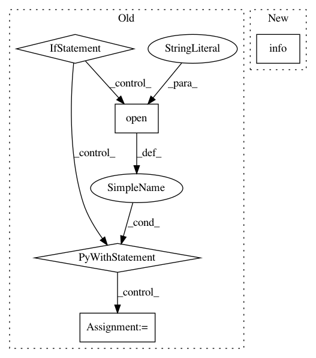

fe87da76b6b7e54e766ac238f4b5b46d2f578493,filter.py,ArticleFilter,load_processed_corpus,#ArticleFilter#Any#,88
Before Change
corpus_names = [name for name in os.listdir(path)
if not name.startswith(".") and os.path.isfile(name)]
if len(corpus_names) != 0:
for corpus_name in corpus_names:
with open(os.path.join(path, corpus_name),"r", encoding="utf-8") as data:
c = json.load(data)
self.corpus += c
for article in self.corpus:
a_title = article["Title"]
self.titles.add(a_title)
//輸出文章的 Responses
with open(os.path.join(path, a_title),"w", encoding="utf-8") as op:
op.write(json.dumps(article["Responses"], indent=4, ensure_ascii=False))
def generate_corpus(self, articles, drop_response=True, negative_tag=None, no_content=True, min_length=7):
依據需求挑選出符合語料庫需求的文章
After Change
self.corpus += c
logging.info("已讀入 %d 篇文章" % len(self.corpus))
logging.info("正在抽取文章與回應")
for article in self.corpus:
self.titles.add(article["Title"])
self.order_titles.append(article["Title"])
self.order_response.append(article["Responses"])
In pattern: SUPERPATTERN
Frequency: 3
Non-data size: 5
Instances
Project Name: zake7749/PTT-Chat-Generator
Commit Name: fe87da76b6b7e54e766ac238f4b5b46d2f578493
Time: 2016-10-20
Author: zake7749@gmail.com
File Name: filter.py
Class Name: ArticleFilter
Method Name: load_processed_corpus
Project Name: xinntao/BasicSR
Commit Name: bf3d4f719d6dd880ec09bf228e56bcf6a5929210
Time: 2018-12-28
Author: wxt1994@126.com
File Name: codes/models/SR_model.py
Class Name: SRModel
Method Name: print_network
Project Name: deepfakes/faceswap
Commit Name: 051619c6b266e46122fa44f37003f3e60cd06363
Time: 2019-02-22
Author: 36920800+torzdf@users.noreply.github.com
File Name: setup.py
Class Name: Install
Method Name: install_conda_packages